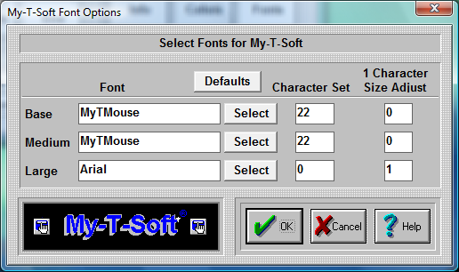

| My-T-Soft®: for Windows; Indestructible Keyboards and Indispensable Utilities; Version 1.80; User's Guide | ||
|---|---|---|
| Prev | Next | |

IMPORTANT NOTE:
The Font capabilities of My-T-Soft are limited for a variety of reasons. These limited options have only been included as a specific solution for a small subset of customers. Use My-T-Soft Build-A-Board for more complete control over the appearance.
Base / Medium / Large Selections
Sizes 1-6 are the Base sizes. For almost all uses, the MyTMouse font is the best choice.
Medium Sizes are 7-9.
Large Sizes are 10-12.
Select Button for Base / Medium / Large
Each button selects the corresponding size range font. A System Font Selection dialog is available to select from installed fonts.
Only the (Font) Face Name is preserved.
Character Set for Base / Medium / Large
For MyTMouse, use 22. For most others, 0 is the best choice (ANSI). Symbols use character set 2. Other choices are:
ANSI_CHARSET = 0
DEFAULT_CHARSET = 1
SYMBOL_CHARSET = 2
MyTMouse = 22
MAC_CHARSET = 77
SHIFTJIS_CHARSET = 128
HANGEUL_CHARSET = 129
HANGUL_CHARSET = 129
JOHAB_CHARSET = 130
GB2312_CHARSET = 134
CHINESEBIG5_CHARSET = 136
GREEK_CHARSET = 161
TURKISH_CHARSET = 162
VIETNAMESE_CHARSET 163
HEBREW_CHARSET = 177
ARABIC_CHARSET = 178
BALTIC_CHARSET = 186
RUSSIAN_CHARSET = 204
THAI_CHARSET = 222
EASTEUROPE_CHARSET = 238
OEM_CHARSET = 255
1 Character Size Adjust for Base / Medium / Large
This setting refers to the amount subtracted from the available area of the key (total pixels) used to display the font character. Even though it strongly affects key displays of 1 character (i.e. alphanumeric keys on the Keyboard (Alpha) panel), it does have some effect on all buttons displayed. In some ways, this is similar to the Key border concept in Operation Options - the only use for this value is in calculating the best point size for the key display.